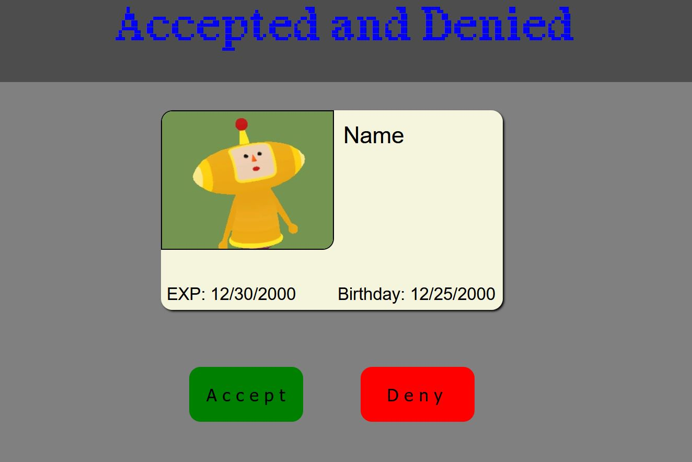

So I've been dabbling in Blender and Unity the past couple of days. It's been fun but overwhelming. The learning
curve for those programs is insane. I've been following tutorials online for Blender, but I've realized that its not helping me at all. I
am gonna end up getting stuck in tutorial hell if I keep doing that. With unity, I was also following a tutorial but I had to stop because the same thing
was going to happen. Now I am following a course on Unity's website that is designed to help you learn, there's test and they have a 'watch then do'
approach. I think this will go well for me. My end goal here is to make a game, heres the idea:
So you are an alien that has crashed down to earth. You crash into a field outside of a large city. You wake up in an apartment with nothing but a
letter left behind. It explains what has happened to you and what you need to do to blend in on earth. You'll need to figure out what happened to you
through talking to others around the city and making friends. I want this game to be a single player story game. You can decorate your apartment and your
character. I have no idea when this game will come true but it's something that could be really fun to make.
Next, I am gonna talk about jobs. Recently my friend has been hired on into a web support role. She has told me that they are looking to hire two more people and
she said i should apply. I am a little nervous seeing as how they already have over 100 applicants for the posting. She said she'd put a word in for me so
maybe that will help. I think I am probably going to be going up against a lot of people that are better than me. Very nerve wracking. But I
will not get my hopes up, but I will hope for the best.
HellDivers and Retro Gadgets3/21/24
I so have been working on the stratagem game.. but I haven't been working with Alyssa. She kind of took
over the base of the project and I got discouraged pretty quickly so I haven't touched it on github. I feel bad and I should
probably say something. But I have made some progress on my end of the project. But I am stuck, I am having a couple of problems:
Arrows don't clear unless I reload the page, even though i have the innerHTML = ' '.
Need to figure out how to compare the stratagem to the one being typed
Its a little frustrating but I am sure I'll figure it out.
ALyssa also got me this game called Retro Gadgets. It's a game where you can make gadgets using the language Lua. It's a super
simple language, it reminds me of Python. It's used in roblox so how hard can it really be to learn? I've looked at some documentation already
and a youtube video, I think this will be a fun thing to mess with.
My school work has also been kind of boring and uninteresting? Maybe? I don't know, I really just want to hurry this up so I can get a job in IT.
I've had no luck with jobs of course. Nobody even wants to hire me for a TIER ONE IT desktop position. It's insane to me and really discouraging.
There a lot of positions in Indianapolis but thats an hour away and I really don't want to drive an hour or more to work. I don't know what I'll do.
no surprise3/15/24
to no surprise I have been stuck and I haven't been coding recently. I've been playing video games and
doing school stuff. But while during my gaming, I came up with an idea. The game i've been playing is HellDivers 2, in the game
you need to use these things called 'stratagems'. They give you air support like bombs and they can also contain support weapons for you
to use. Well my idea was to create a website where you could practice the combinations you need to type in to call in stratagems. There's
so many different combinations, it would be such a cool website. I've enlisted the help of my friend Alyssa on this project, I think it could
be really fun and a good way for me to learn to work with other programmers and read other people's code. I will update when I make progress!
stuck again2/25/24
I have been stuck for this entire month. I have no idea what to do right now. I have a friend who has
been telling me to start learning React, I want to but I haven't been able to get myself to do it. I am starting to really want to
get into software engineering in terms of creating applications and not just websites. I also have a feeling I want to become a game developer
but I don't know. Its the same feeling I had about web development when I was thinking about getting into it. I don't know what to do.
I feel kinda paralyzed. I start school back up on the 28th, I'll be taking two classes, Web Development, and Database Concepts with Microsoft
Access. Hopefully they are interesting.
I think right now I am going to add something to the game I finished. I want to add randomized photos to the ID. Maybe that'll motivate me
to start doing stuff again.
Number guessing game and locking in pt22/7/24
Yesterday I was going through the udemy course my friend let me use. I know all the stuff in the first
two sections so i moved on to the DOM part of the course. The teacher was going to demonstrate the DOM by
creating a number guessing game. I figured I could do that without watching the video so I tried and I did it perfectly.
It doesn't look super pretty but its the functionality i was worried about. I put it on my github just to have
something else to display.
I think I should continue the course. I do find myself getting board and wanting to go make something but I don't ever have any
ideas on what to make. I want to work more with API's so I am going to go back and watch this youtube video I watched where this guy
used this API called PokeApi. Its a collection of information on all the pokemon out there. The video
was pretty straight forward so I might watch it a couple times.
C# and locking in2/5/24
It's been an eventful past week or so. I've been learning some C# and trying to figure it out
has been a little crazy. Its a whole different way of thinking with the object oriented languages. I haven't really
made much, I'm still trying to learn the syntax and everything. I had to get Visual Studio, the one that is a
compiler, and its been interesting. I really want to make programs I think. I am also thinking about getting into web app development.
I did not end up getting that tech support job. It was really upsetting but i got through it. But a new opportunity has come to light
through my friend Cati. She just got a job as a web specialist, its remote from New York and I think she get paid around $45k a year.
During her orientation today, she learned that there is a employee referral program that they can get payouts on after
60 days of working there. If i strap up and lock into my web development journey, this could be big. I would also want to recruit
my friend Alyssa that is also a web developer. They are much more experienced than me and have actually put some cool stuff together, so if
anything, I hope this would help them get a job. So with that being said, I need to start doing some more things with Javascript. I have kinda stalled
out of my learning and need to get back in. I will continue my c# journey later. I need to polish up my
javascript game and put it on github so I can link it to my LinkedIn. I was also given access to my friends Udemy login
that has some web dev courses. I need to start doing the javascript course they have.
Job Interview and Game Progress1/26/24
I've got a lot to say in this blog post today. I'll start off with my game progress. It's basically
finished! I got the logic down finally and added a start screen and a game over screen. There some more things I want to add
like high score and some sound effects but I think it looks pretty cool right now. I also added randomized last names to go with the
first names. I also want to add a function that displays a random picture on the ID. I have an idea for another game but I might learn
a JS gaming framework for that.
Next, I got a job interview for a Tier 1 Help desk position here in Bloomington. I aced in the interview. Granted it was only an HR interview
and i'm really hoping I don't have a technical interview next. It seems like a pretty sweet deal. The only issues are no tuition assistance and
the pay is not great. The starting salary for that position is $32k but they said they could start me at $35k because of my A+
and customer experience. I am making that now and ideally i wanted $37-38k. I sent an email back last night asking for $40k hopping they could
bump it down to where i want it. If i can get the salary I want, I will probably be leaving walmart. As for school, I can pay for that with my
dad's army benefits and that should be able to cover the rest along with any Pell grants I get with student aid.
I guess that wasn't as much as I thought. I want to do some more things. I've also been really looking into getting into C++ or Java.
I bought a book at our book store here for a couple of bucks and its programming games with C++. Nothing crazy, just text based games
and tic tac toe kind of games. My end game goal here is to be a software engineer and only knowing HTML CSS and Javascript is not going to cut it.
I want to enjoy what i do and make a lot of money doing it and I think this is the right path for me.
Still lost1/21/24
To no surprise i am still lost on what i should be doing. I have begun writing
down some project ideas I can do and I've come up with a few. The main challenge is to actually go through
with them. Some ideasI've thought of: game catalog/steam linked game catalog within API, Gunpla catalog,
budget/money calculator/tracker, fan site for a video game I like, magic eight ball, gaming blog, and a
website called is it worth it? This would get reviews for games from the internet and determine if that game is worth
getting or not. I think I have some decent ideas. I also want to continue working on my ID checking game but
i've hit a road block with that. I almost want to start over with it but that might be a bad idea. But it could
also be a good idea, i'm not sure. I should be posting on LinkedIn more but I have nothing to say.
Some job news, I found a tier 1 desktop support position where I live. Its a hybrid position
and it'd just be doing regular IT troubleshooting things. I applied and i'm gonna see what happens. The
only reason I am at walmart right now is because they are paying for my schooling. I if i were to get this
support job, I'll have to do a lot of think on whether I should give that up or not. On one hand it would be
nice to have some kind of degree when trying to get into this field. But on the other hand, if i can
get into the field before I even have a degree, then the hardest part is already done. I just need to get
my foot in the door. I want to ask them (if i get an interview) if they offer any tuition assistance/ reimbursement,
that would really help me out.
I have noticed that I am starting to lose track of what i want to do. I've been jumping between web developer and software
engineer. I think they are closely related but I don't know what I want to do. I actually do know, I want to
be a software engineer in the long run but I think web development is a good starting point.
Wishing I had more structure1/17/24
I am still having trouble figuring out what to do. I am wishing I had some more structure.
I could always just follow and udemy course or continue with the Odin Project thing. Maybe I will do that. I also want to try and
start the big project I want to make which is a PC part tracker website. You can go there to search and keep track of prices, that sounds like a really
big project and it sounds overwhelming. I don't even have a UI planned out. I am also scared to start working on my javascript game again, I feel like I am
not smart enough to keep going which is crazy because I've already made half of the project without an issue.
Slow progress1/9/24
I've been kind of stumped on what to do/make lately. I've been going on the Odin Project
and going through there Javascript fundamentals course. I think I'll keep doing that. I've also been using Linux a little more.
I think its a good idea to be doing that so I can get some practice in with using git in the terminal.
After doing a tutorial on making a to-do app with javascript, I had the idea of making a website where I can log and track my completed/uncompleted
Gunpla builds. I think that'd be a cool project to make but I think I need to plan out everything a little more. I just jumped in and started doing it and I got overwhelmed pretty
quickly. I also want to work more on my ID checking game. I started posting on LinkedIn about it, but i've only made one post because I haven't worked on it
since I made the post. I have to add the calculations for the DOB on the card because right now, you're only checking if the
card is expired or not. I also feel like I want to do some stuff to this blog. I want to create a text box on the page where I can
go in and type my blog from there without having to type directly into the index file. I think I could manage that with the added information
from the to-do list tutorial.
I've been thinking about other companies I want to work at other than Two Barrels. Mozilla has become a big candidate and so has Epic Games. I think
I want to work within the gaming industry. Not making games but just around the people that do. I am unsure if I'd want to make a game. I've been
watching a lot of self taught game developers on youtube. It seems cool but its just so much to learn. I've been thinking about getting into C++ or C#/Java too.
I think my endgame career is some kind of software engineer. I never thought I would be able to reach that goal because I thought you would need a computer science degree
and know a lot of math, but that is not true. I wish college wasn't so expensive and out of date so I could've gone but I doing fine on my own now.
New progress on game1/1/24
With the new year I have been able to get part of my game working!!! I made it so
that right now all you need to do is determine if the ID is expired or not. I also made is so that when you get more than one on the
score board, the number changes to either green if you get a win or red if you get a loss. Very happy I have actually made some progress on this.
I think I just needed the time away from it.
I also have made my first post in linkedin. I guess i should start using it so I am prepared to get so software engineering/web dev job
in the future. I am going to document on there and here my journey with this game I am building and any other things I am making. I want to
continue to work on Piper's (my partner) teacher portfolio website. I think that will look good on my portfolio. I have also been kind of interested in game development.
It scares me because I just jumped into web development and I don't want to jump ship yet. I also do really want to develop full on games? I don't knowm, its all kinda
confusing to me. I think I just want to work near the gaming industry, but i thinking making a game would be really cool. Maybe when I feel better with js, I'll jump
into OOP/C++.
unmotivated/stuck/bleh12/31/23
I've been away from coding for a while. I've been feeling kinda unmotivated. I don't know why. I can't
figure out anything I want to make. I've been working on my game but I am stuck right now.
So i have the abbreviation of the months in an array. I have a variable called random index set to 0. Then I have a function that
takes randomIndex and returns a random number 0-11 with in the months array like months[randomIndex].
I have another variable called currentDateM that equals 11. Now what I am trying to do is compare the randomIndex to currentDateM in an if statement set up like\
if expYearNumber >= currentDateY - if randomIndex >= currentDateM - add a point to the win count. I hope that made sense for any future readers.
Whats happening though is the function is not reading randomIndex as a number (?) I cannot compare currentDateM and randomIndex.
stuck and Linux12/17/23
The game I have been working on has me stumped right now. I've got a lot of the game itself done but
its the logic part I am stuck on. I am starting to get frustrated so I may take a break from the game for now, or only work on the CSS
part of it. I am thinking I'll start back up with the freecodecamp project tutorials and see if I understand things better.
I feel like I have a better understanding of javascript but i still have a ways to go.
My dad bought my christmas presents early! I asked for a desk and a 1tb m.2 drive. I am going to use the drive to dual boot Linux.
I am not super versed on it. I've used Ubuntu before and I have a Raspberry Pi, but i need to use it more. I got the distro Elementary, it
looks a lot like Mac OS. I am excited to use it and learn more about Linux.
Progress on game!12/14/2023
I've been making a lot of progress on the game I am building. I've edited the CSS to make it
look better too and added a font:
I was having a lot of trouble trying to randomize the array I have everyones names in but i figured it out. the plan now
is to randomize the birthday month, possibly the day, and year and display them on the card. I also need to figure out the math
part of this. I want the score number for losses and wins color to change if the number is bigger than zero too.
I also want to give the ID a little more character, I might go in to an art app and make a bunch of different 'conditions' of the ID,
like more intact/battered and used. I think I will be able to get the logic down for this project, I was really having a hard time
the other day trying to figure it out and i was stumped for hours. But I am on my way now to making this game.
JS Game12/12/23
Today I have been working on my JS game i was talking about yesterday! I have decided to call it
Accepted and Denied. I have made the start of the game screen, here is a picture of the progress:

I'm a little scared to start the javascript part, but I think I will learn a lot doing this and I think it will
also look good on my portfolio lol.
So for the functionality, I plan for the accept button to check if the expiration date is equal or less than the current date. If it is then
the next check is if the birthday is equal to or more than the date that makes you 21 (i think). If those all pass than you get a point,
if its not right, I'll have another counter that logs how many you've missed, you can only miss five before the game ends. I might also
want to add a timer so if time runs out and you haven't decided, its a loss, but i dont know about that. I'll have to add some more stuff to that
like a counter display for wins and losses.
Feeling more accomplished12/11/23
So yesterday I started watching a 8 hour long youtube video from freecodecamp.
In the video they are building 15 different javascript projects that are really simple. I've completed two of them
and they were a button that would change the background color of the page while also displaying what color the background was,
and the second one was a counter with three buttons, one would increase the count by 1, one would decrease the count by 1
and one would reset the count back to zero. I went back over the color changing one today and took some notes without coding, and then
created it again using only my notes. I was able to after some time. I feel like i've actually learned something
and retained it. I also learned the the DOM in javascript is not what everyone uses, thats where React comes in.
I did't know that and im glad i learned that because working with the DOM is kinda tiring. On another note, I have sent a message
to Two Barrels asking if their junior positions are eligible for a hybrid work setup. I hope its hybrid
so they can fly me out to the office every month (maybe). I think that would be really fun and good for me.
I've been going back to their website constantly. I keep looking at their 'how to get the job' page and re-reading it. I also saw on their
benefits page that they offer a work from home fund/stipend. They say you can use it for whatever and even some people get a monthly stipend.
Thats really really cool. I would use it to get a new desk and chair for sure.
Update on the blog, I've changed the background color to grey instead of purple and I think I'll be changing the border of the
blog post. Right now its a gradient of red to blue. It looks cool but I'm looking for a more sleek look.
I made the header look a lot better, darker grey background with no border, at the top of the page.
I have an idea for a project, I want to make a simple game. No graphics or anything, just a vanilla javascript game. I want to create a bunch of ID's
and make it a ID checking game. like you're a bouncer for a bar checking ID's and you need to let the people age 21+ in only.
I have a game like this on my switch and it was really cool. I'll start working on that now.
Having some trouble12/9/23
I'm feeling a little lost and overwhelmed with javascript. I feel like i need some sort of structure
and I'm not really getting that with youtube videos and whatnot. I've tried to go through a tutorial and
code along with a spending tracker app but the person on the video always types so fast and doesn't explain what they're typing
a lot of the time. I was also thinking that i should learn some Backbone.js because thats what they use at Two Barrels but then i got stuck because
I couldn't figure out the difference between libraries and frameworks. I am feeling really frazzled and I don't know where to
start ? I've got the javascript basics down (i think) but the more advanced stuff is scary. I don't really know what to build or
how to apply any of what i've learned. I'm feeling a little discouraged honestly. I downloaded a book on javascript that also
has jquery, maybe that'll be enough structure for me to follow. I'm kind of bouncing all over the place and its really
confusing!
I am also thinking of changing up how this blog looks. Its kinda blocky and ugly to me now and I think that I could do better.
Back from Chicago12/5/23
I am back from Chicago! It was a fun trip and Pierce the Veil was really good. I really like chicago a lot
and I cant wait to go back. I'm feeling a lot better about coding and stuff, I think i really needed that break for my brain. I am also
done with school until febuary. I plan to use this time to get better with javascript. I'm gonna do some projects, maybe even
try and do then without a tutorial or i'll watch the tutorial and take notes, then try and do it myself. I am not sure how much javscript
I need to know to be able to say 'I know javascript'. I've been trying to look up 'most important topics in js' and maybe i should keep
doing that.
Feeling a little burnt out11/28/2023
I've been feeling a little burnt out the past couple days, I think I may take a little break from web developer stuff.
I've been doing a lot of learning with javascript and I kinda at the point where I don't really know what to do with what i've learned.
I now I can do the typical projects like to-do list and weather app but I think I am just gonna take a break and come back to that later. I still really
wanna be a web developer/software engineer but its the only thing i've been thinking about for weeks and I probably need some time to do other things.
those things include doing some travel and playing some video games. I am going to chicago on December 1st with some friends to see a concert. We are also
spending the weekend there so I think that will be a lot of fun. I am also going to New York City with my partner early January and I am also really excited for that.
I've also just acquired the game Fallout 76. The Steam Fall sale is going on right now and my friend bought it for me, so I will be playing that today.
When I return from my little break from developing, I do want to attempt those weather app and to-do list projects. I've already kind of tried to do them but
for whatever reason I did not finish them. I'm gonna try and keep up with my javascript knowledge with some exercises I find online, I don't wanna come back in
not knowing how to do anything.
Javascript11/24/23
So for the past two days i've been on w3schools reading up on the
javascript syntax and everything else. It seems similar to python but no entirely the same.
I've learned a lot of stuff and written it down in my notebook. I really want to try and make something with
what I learned now but maybe i should learn more about the DOM first. I also getting really antsy and
i want to apply for that job at Two Barrels but i really think I should wait. I'm so hype about it that if i got
rejected it would probably do a huge blow to my me in general, so i will wait and learn more javascript.
I also really need to learn more about html forms and how to make a responsive site or a 'mobile first' site.
I've tried to make a responsive website before but the media query thing is kinda confusing. I am not really sure
what to put in it and what not. But i will figure that out.
Progress on game frames11/21/23
I'v made a lot of progress on the game frames i wanted to make. I uploaded them to github
so i can work on them from my laptop and computer. They look really good! I think i can add more to them though to really make
them pop. I'm not sure what though. I know i need to change the font on the summary text for the frames. Heres a picture
of the Katamari one I made:
I really like the way this one turned out. I added an ID to all the frames so i could customize the background
color of the frames. Here is the github pages link to see the whole thing: Game Frames.
This is future me from 12/11/23, I have edited the button I originally had, they were very simple and just changed
the color of the button. Now these buttons change the color of the border and I'm not sure what i should make the
other one do.
it was pretty fun to figure out. I'll probably put in a button on this blog post that will change something in the post.
So far all i can figure out is how to change then styling of things, I will figure out more here soon.
basic blog post11/19/23
Today I was listening to some podcast at work, I listen to a bunch on coding and becoming a software
developer and its just making me more excited to become one! I can't wait to start learning javascript, I haven't started because
i am currently in a python class and I can't learn two languages at once. I think i will get a good
grasp on it once i start, i took a class on it in college in 2019 and i really liked it.
I've also started doing more research on the company I want to work at, Two Barrels. I read through all the pages
they have on their site, they said they are always hiring so thats a plus. They also want a cover letter to come with your application.
Your app won't get viewed if you don't submit one, but they also want the cover letter to be relaxed and not super robotic
and corporate coded, which is great because i do not do great in those kind of areas. I really think i have a shot at this
company, I need to keep working on my projects and javascript for sure. I also want to look into the technologies they are using, ive already looked
into a couple, some are Django and Backbone.js. I don't really understand what they are so im going to have to
sit down at some point and watch a youtube video on them or something. I know this might be too early to do this but i want to
start drafting my cover letter too. And also unrelated but I also should really practice my typing skills, I can do 60 wpm but
I make some mistakes along the way, I want to be really good at typing.
static page for resume11/17/23
So i've been working on this on and off but I decided to make my resume a static
webpage. I think that would be a unique thing to do. It doesn't look crazy or anyting, just straight to the point.
So this is it so far. I don't think I'm anywhere close to being able to use this to apply for an actual
job. I think i need some more experience with JS and Python to confidently put those on there.
I also need some more personal projects and maybe some open source contributions
Working on the blog11/16/23
Today I've been working on the blog page. I added a page for the game cards,
I think if i keep tweaking it, it'll look really cool. it looks pretty flat and and bland right now.
I also fixed some other things, like Instead of having links to my socials that say "twitter" "linkedin"
etc, I got the icons and made them links instead and i put them in the header instead of where the other blog
links are. I'm not sure what else I want to do to make this look nicer. Once i learn some more Javascript I can
probably figure out what more to put on here.
I am also almost done with my classes for this term. I have 1-2 more seminars left and this unit and next unit, so
about two more weeks of this and then I get my break. I'm kinda sad I am switching over to javascript and leaving python.
I really like python but I think its easier if I just use javascript for web development.
New ideas and some new motivation11/15/23
So I was listening to a web developer podcast today and i came up with some
more ideas for my blog. So the first thing i want to do is choose something new to learn every day or
every week and post about it here in my blog. Maybe in a separate area but i think that would be a good thing to do
since there are still somethings i don't know how to do in HTML and CSS. The next idea was to create another page
where i would create custom "cards" for video games and other media i like. I think that would be a really fun thing to do
and it would increase my understanding of somethings in HTML and CSS.
There's also a project I've been thinking about and want to actually do, but it would take a lot of effort and time to do,
i want to create a PC part tracker. I think i've said this before in a previous post, but i think it would be a really cool
project. I'd have to learn a lot though and i'd have to start when i'm done with this current term in school. Luckily
I will have a nice break between end of this month to until febuary. Maybe i can try and learn some more during that time.
Homework and Games11/14/23
So i haven't posted in a while! I've been busy doing some homework and playing a
new game I bought with some friends. Its called Lethal Company. Its like if Deep Rock Galactic and
Phasmophobia had a baby. Its a co-op horror-ish game where you and your team are sent to different
planets to get trash at work sites. You then sell the trash to the company for money. There are monsters on the
planets that you need to avoid. Its kind of a hard game honestly and its impossible to play by yourself.
I've enjoyed it a lot so far and I think the developers will do a good job of updating the game and keeping it
fun.
Switching over to the web dev of things, I've been feeling maybe a little burnt out with it? I'm not tired of it
but I've been doing so much learning and i have so much more to do, It's kinda hard sometimes. But I
really want this for myself. I love creating things and I love the coding side of developing, this is something
I really wanna do and I am going to do. I know I don't have enough skills to get a job right now, but I can't wait
for the day I can start applying. I think I've said in the past, I really want to work at this place called Two
Barrels. I connected and messaged a guy on LinkedIn that works there and he didn't respond, but he read it.
Kinda disheartening but thats ok, I'm sure he thought i was looking to get a reference from him but that wasn't the case,
i just wanted to know more about the company. I think when I'm ready to start apply for jobs, I'll
apply to other places first so i get the interview experience.
Some other places I want to work at are SteelSeries, Valve, Discord, Mozilla, or Logitech.
I wouldn't mind working at a gaming company doing web developer work. I love video games and
i wanna be around the industry without being in it. I'm going to keep going and doing more projects
so that i can be a full fledged developer. I am also wondering if I should put this on my LinkedIn,
I think employers would like what I'm doing, so I am going to keep this up and hopefully they find this
appealing in the future.
New monitor and remaking the calculator11/9/23
Yesterday walmart started their black friday deals, I saw that there was a 27 inch
monitor on sale for $145 from $260, so i debated with myself and decided to buy it. It should be here soon.
I had early access to the black friday deals by 3 hours because i have a walmart+ membership, i really excited!
I also think i should try and remake the calculator i made yesterday without any youtube video, I may look at my old
code for reference by I think this will be good for me since i kinda just copied what was on the screen.
Calculator w/ js 11/8/23
So the weather app thing is taking to long to do, I really didn't
think this would take so long. So i decided to do another project instead, an online
calculator. I have to make sure i'm actually learning something from these videos though
so im going to document what i did and what each step means.
so here is the calculator, you can click all the buttons and it brings up the numbers and
the operators. You can do everything like adding and subtracting and the = button works too. there
was box shadowing used in this and i still don't really understand that at all, but I'll figure it out.
I first started off making a bunch on divs, one for the whole calculator which was named 'container',
and then another div inside called 'calc' and then inside that, a form tag. inside the form tag is
divs for all the buttons on the calculator. the first div is for the display that shows the numbers
you click and the rest are the numbers and operators. so the display div has another tag inside
called 'input' and it has some attributes inside called type=text and name='display' I think the
'type' has certain words you're allowed to use for it. the 'name' is for whatever you want.
I won't explain everything i guess because that would be a lot to write out, but maybe
ill try and explain the JS part of it. So for the buttons, Ill explain the AC button,
it has input class = 'operator' type = 'button' value = 'AC' onClick = 'display.value = '' '. So what
i think is going on here is that it is an input type, so characters go into it. Then the class is obvious,
I made a class to change the color of the buttons with the operator class. the value is probably
what goes into the display which in this case is nothing. And the onClick probably listens for a mouse
click by the user and executes something when that happens. when onClick is activated here, display.value
will equal '' or AKA a blank space.
Doing weather API
thing with JS11/7/23
Today I decided i was going to follow a youtube tutorial on how to
make a weather app with an API. I am afraid that I am just copying what the guy is doing
and not learning anything, but i also think i am learning something.
I feel like to should
just do the projects that everyone does and put them on my GitHub BUT, I wont have those as the
main pieces i want employers to look at, everyone has those projects. I have to think about what
i want to make. I had the idea of making a PC part price tracker website. You can go on there
and keep track of the price of a part you look up. I know this would be difficult but i think i
could do it. I also changed the border of these blog entry post to a border-image with a linear gradient,
i wish i could give it a border radius to make it round, but i think this looks good for now. I want to
continue to make this blog look nice so It can be a good piece to put on my GitHub.
UPDATE, ive
been waiting for hours for this API key to be activated, I didn't realized free keys take forever
to activate, so I haven't been able to continue my project, might try something that doesnt
require an API
struggling with trying to find projects, learn, and more 11/6/23
Today I contacted Guild about switching my program at purdue global to
a AAS in information technology with a concentration in programming and software development. They
said that walmart has paused enrollment for the year so that 'employees can focus on the busy holiday season'.
I think this is stupid. Now i have to wait until febuary next year to switch. The good news is that
ill be able to take a break without any issue. So i'm going to use that time to make projects and learn
more about Javascript, React. There is also a company I have been looking at for a while, they're called
Two Barrel, I think that looks like a great place to work. They seem really relaxed and its a remote/hybrid position
from Spokane WA. That would be so cool to get to fly out there for work. I'm gonna try really hard to get my skills
in order so that I can apply there. I messaged and connected with a guy that works there, he did not respond.
Made me a little sad to be honest, but thats ok. I think what i need to do is keep working on my HTML and CSS
and then after i get done with my python class, I need to start learning more Javascript.
About my python homework 11/5/23
So my python assignment this week was a little hard. We had to create two
functions, one that would take a list of temperature in C and translate them to F, then display
them side by side like 'the temperature is #C or #F'. Then the second function needed to put a
weather statement next to each temperature reading depending on the temp. I first was having issues
trying to get the list to iterate through the math that would translate the temperature, but i eventually
got it. I had to do 'for n in temps()' and then add a variable that would store the new temps: 'tempF = n * 1.8 + 32' then print it 'print(tempF)' and that would give me the temperature in F.
First entry 11/4/23
My name is sadaja, I am 22 years old and I'm starting this blog so that i have somewhere to share
my thought on everything i'm doing. I am currently in school to get my associates in cyber security
but i've realized thats not what i want to do. I've seen what goes into those jobs and it looks boring.
web development seems a lot more entertaining to me and a lot more interesting. So i will be switching my
associates to Information technology with a concentration in programming and software development.